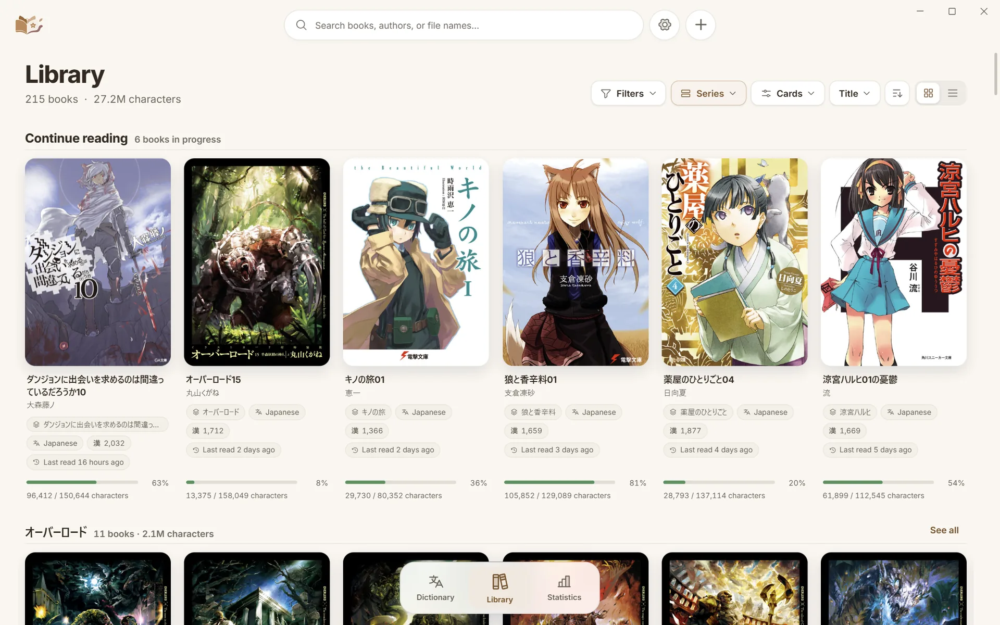
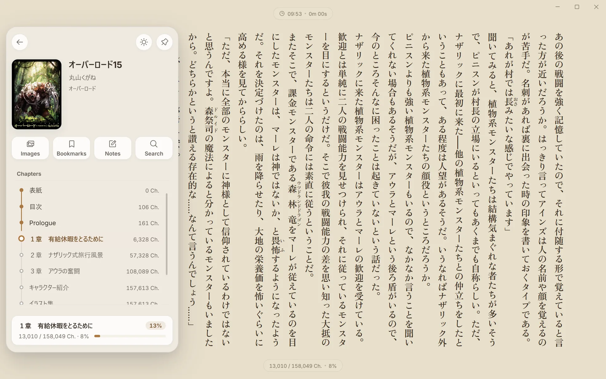
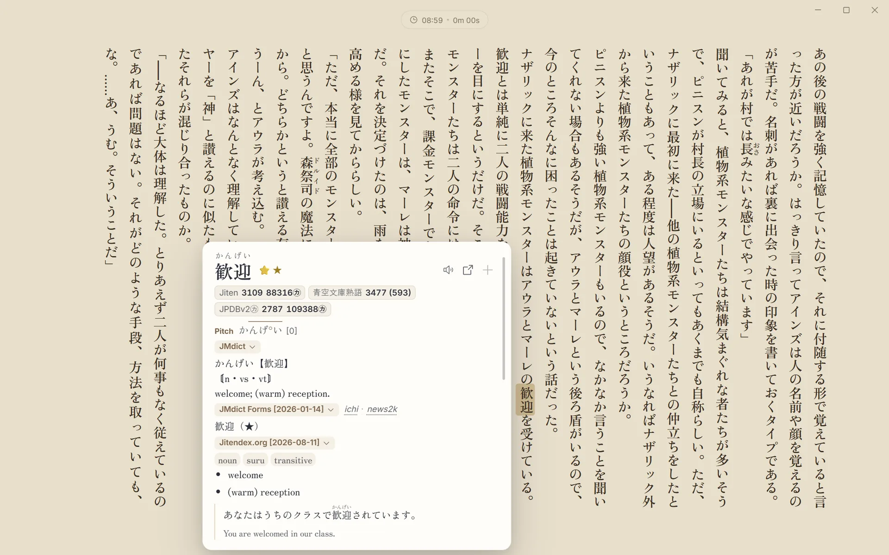
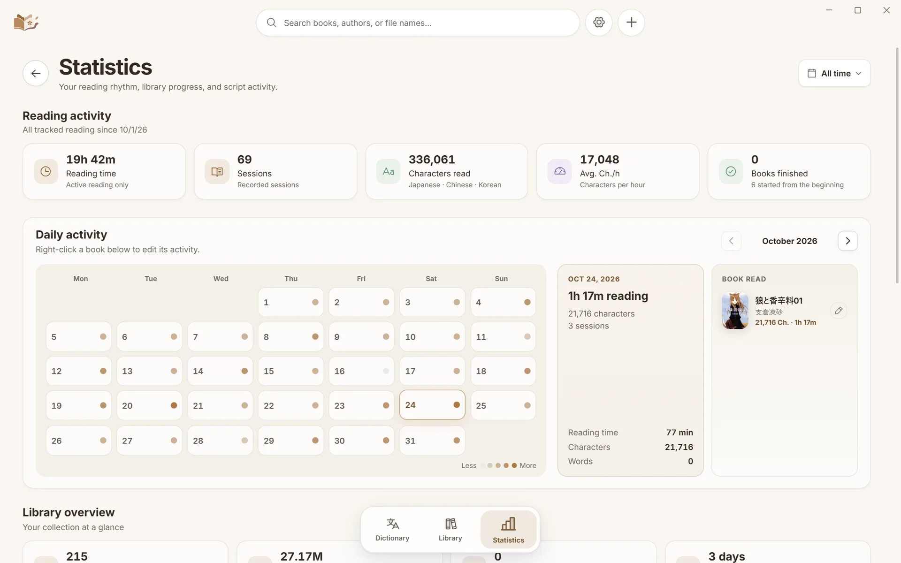
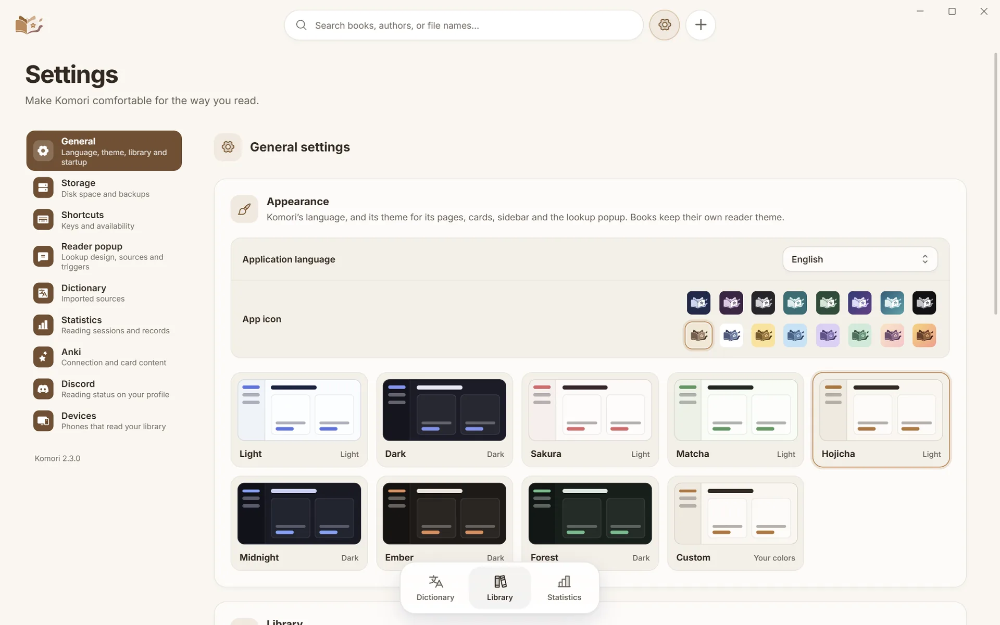

Documentation
Installing Komori, adding books, and how each part works on Windows and Android.
Install
Windows
-
Download the latest
Komori_<version>_x64-setup.exefrom the releases page. - Run it. The installer is not code-signed, so Windows SmartScreen may warn about an unknown publisher; choose More info, then Run anyway.
Komori runs on 64-bit Windows 10 and 11. It needs the Microsoft Edge WebView2 Runtime, which Windows 11 already includes; if it is missing, the installer downloads and installs it.
Android
-
On the phone, download the latest
Komori_<version>_android-arm64.apkfrom the releases page. - Open it and allow your browser or file manager to install apps when Android asks.
Komori runs on 64-bit Android 10 and later, on phones, tablets and e-readers.
Updating and uninstalling
Komori checks for a new version when it starts and asks before installing it, showing what changed. You can turn the check off in Settings > General on Windows and Settings > About on Android. Updating keeps your data.
To uninstall on Windows, use Installed apps in Windows Settings; the uninstaller asks whether to delete Komori’s data as well. Your EPUB files are never touched.
Add books
Komori reads EPUB files where they are. It never moves, copies or changes them.
- Drop files. Drag EPUBs from Explorer anywhere onto the Library.
- Add books. The + button in the top bar opens a file picker; on the phone it opens Android’s document picker, where you can choose several EPUBs at once.
- Book folders. In Settings > General, add a folder and Komori imports everything in it; Check for new books picks up what you add later.
Imports report progress and tell you what happened to each file. Titles lose store and edition tags, and volumes and series are read from the books and their file names.
Library

Continue reading lists the books you have started. Below it, the toolbar switches between a grid and a list, filters by reading status, chooses the details shown on each card, and sorts by title, author, progress and more.
- Groups. Group by series, language or author. Each group is a row with a See all page of its own.
- Automatic series. On by default: Komori builds series from the numbers in file names and titles, and from each book’s own series. A series you set by hand always wins.
- Edit titles and authors. Edit… on a card’s menu changes how a book is shown without changing the file. With several books selected, retitle the first volume and the rest follow, numbered.
- Selection. Tick several cards to mark them as completed, relink or remove them together.
- Characters or words. Japanese, Chinese and Korean books are counted in characters; western books in words.
Reader

Reading modes
Open Appearance (A) to choose how the book flows: Continuous, Semi-continuous, Paginated (single or double pages) or VN, which shows a few paragraphs at a time like a visual novel. Each works in horizontal or vertical writing.
Appearance
- Themes. Fifteen Reader themes, plus named themes of your own and an optional background image with blur.
- Typography. Separate fonts for western and Asian text, size, weight, line height, indentation and spacing. The + beside a font opens the font manager to download more families or import your own TTF and OTF files.
- Page. Margins, maximum width and height, justification, and how far the wheel scrolls.
- Furigana. Hide it fully or partially and reveal it per word when you need it.
- Footer. Choose what the two pills show: book and chapter position, percentage, reading speed, the clock and the session time.
The sidebar
Move the pointer to the window’s left edge, or press S, to show the sidebar: the book’s card, the chapters as a timeline, and tiles for Images, Bookmarks, Notes and Search. Pin it to keep it beside the text.
- Bookmarks. B saves a quick bookmark and R returns to the last one.
- Notes and highlights. Select text and press N, or right-click the selection for Look up, Copy, Add note and Highlight.
- Find in book. Ctrl+F searches the whole book or the current chapter.
- Images. G opens the book’s illustrations as a gallery with zoom, and each can take you to its place in the book.
- Autoscroll. Middle-click blank space in a continuous book to start scrolling.
Looking words up

The popup opens beside the word, inside the Reader, with the entries from your dictionaries.
Triggers
| Trigger | How | Default |
|---|---|---|
| Shift | Hold Shift and move the pointer over a word. | On |
| Shortcut | Select text and press Shift+Enter. | On |
| Click | Middle-click a word, or left-click when you choose that. | On |
| Selection | Select text with the mouse. | Off |
| Hover | Rest the pointer on a word. | Off |
| Touch | On the phone, tap a word. | On |
Change them in Settings > Reader popup, along with the popup’s size, colors, font and how much text it scans.
What the popup shows
- The headword with its reading, as furigana or beside it, and ★ for a common word.
- Pitch accent drawn on the reading, and every frequency list’s rank.
- Each dictionary’s definitions under its name. Click a name to fold that dictionary.
- Voice plays a recording of the word, Open in Dictionary shows the full page, and + adds the word to Anki.
- Click a kanji or a word inside the popup to look that up too, several levels deep.
The Dictionary popup style shows only headwords and definitions.
Lookup languages
Choose the lookup language in Settings > Dictionary: Japanese, English, Spanish, French, Portuguese, Italian, German, Russian, Korean or Chinese. Each has its own dictionaries and its own way of finding the dictionary form of a word, such as verb tenses, plurals and cases, or Korean verb endings.
Dictionaries
Each lookup language keeps its own dictionaries, managed in Settings > Dictionary. You can use Komori without any dictionary, but lookup needs at least one with definitions.
Starter dictionaries
When a language has none, Komori offers to download freely licensed ones: Wiktionary dictionaries with definitions in your language and IPA pronunciations for every lookup language, and for Japanese also curated Japanese–English dictionaries, a word frequency list, a kanji dictionary and a proper-name dictionary.
Your own dictionaries
Choose Add dictionaries and pick one or more ZIP archives in the format
used by popular pop-up dictionary extensions (an index.json in format 2 or
3). Komori copies the entries into its own store and never changes the archive.
Definition, frequency, pitch accent and kanji dictionaries are all supported.
- Drag the rows to set the order results appear in.
- Select rows to remove them or move them to another language.
- Word audio lists where recordings come from; add your own source with an audio URL.
The Dictionary page
Ctrl+D opens a full-page dictionary. Search a word, a reading or a single kanji; the rail on the left lists the dictionaries that matched.
Anki
Komori creates Anki cards from the popup’s + button, with the reading, definitions, frequency, word audio and the book’s cover.
On Windows
-
Install the AnkiConnect add-on in Anki (code
2055492159) and keep Anki running with your profile open. - Open Settings > Anki in Komori and use Test connection. The default port is 8765.
- Choose New deck to create a deck with the bundled Lapis note type, or pick your own deck and note type and map their fields.
Each lookup language can have its own deck. Duplicates can be prevented, overwritten or allowed, and tags can include the dictionary names or frequency tiers.
On Android
Install AnkiDroid and open it once, then allow Komori to use it in Settings > Anki. The popup’s + adds the word to AnkiDroid.
Statistics

Komori records how much you read: characters or words, time and speed. The page shows today, this month or all time, an activity calendar, a library overview and a character explorer whose tiles open their Dictionary search.
- Recording pauses while Komori’s window is in the background, and stops counting after a few minutes without reading forward, so time away never lowers your speed.
- P starts or pauses a session by hand.
- Right-click a book in a day’s details to correct what was recorded.
- Settings > Statistics turns recording off, sets when a session starts, and deletes recorded statistics.
Komori on Android
The Android app has the same Library, Reader, lookup, Dictionary and Statistics, operated by touch.
| Gesture | What it does |
|---|---|
| Tap a word | Looks it up. Tap a word in the popup for the next lookup. |
| Tap the sides | Turns the page in paginated and VN views. |
| Swipe | Turns the page in paginated view; continuous views scroll. |
| Tap the middle | Shows the Reader’s controls: Back, Search, Appearance and Contents. |
| Long press text | Selects it to add a note, highlight, copy, look up or search. |
| Long press a book | Selects it in the Library for information, editing or removal. |
| Back | Closes the deepest popup or the open sheet before leaving the page. |
Pages can also turn with the volume keys, and the status and navigation bars hide while you read. Reopening Komori after Android closes it opens the last book where it was.
Sync with your PC
Pair the phone with Komori on your PC to read the PC’s books on the phone and sync reading data between them. The two devices connect directly over your own network, with no account or cloud.
- On the PC, open Settings > Integrations > Devices and turn on Allow phones to connect. Komori shows the PC’s address, a port and a pairing code.
- On the phone, open Settings > Sync and enter the address and the code. Both devices must be on the same network.
Once paired:
- The phone’s Library lists the PC’s books beside its own and opens them without copying files by hand. Keep on this phone stores a copy of a book on the phone.
- Settings > Sync lists the PC’s dictionaries; Copy brings one to the phone.
- Reading positions, bookmarks, notes and reading statistics sync both ways.
- Books from the PC can be marked as completed or unread, and removed from the PC’s Library, from the phone. Removing never deletes the EPUB.
Settings

| Category | What is there |
|---|---|
| General | Language, app icon, application themes, Library card size and book folders, and startup behavior: launch at startup, start in tray, minimize to tray, restore the last book, remember the window, and updates. |
| Storage | Disk space, automatic backups, export, import and snapshots. |
| Shortcuts | Every key binding, by context. |
| Reader popup | The lookup popup’s style, appearance, triggers and scanning. |
| Dictionary | The lookup language, its dictionaries and word audio sources. |
| Statistics | Recording, session start and limits, and deleting statistics. |
| Anki | Connection, deck, note type, field contents, tags and duplicates. |
| Discord | An optional Discord status that shows the book you are reading and your progress while you read. Off by default. |
| Devices | Allowing phones to connect, the pairing code and paired phones. |
The interface is available in English, Japanese, Simplified and Traditional Chinese, Korean, German, Spanish, French, Italian, Brazilian Portuguese and Russian.
Keyboard shortcuts
These are the Windows defaults. Settings > Shortcuts lists every binding and when it is available.
Application
| Ctrl+D | Open the Dictionary |
| Ctrl+S | Open Statistics |
| Ctrl+G | Open Settings |
| Ctrl+B | Return to the Library |
| Ctrl+F | Search the Library |
Reader
| S | Show the chapters, or hide or show the sidebar |
| A | Open or close Appearance |
| G | Open or close the image gallery |
| B | Save a quick bookmark |
| R | Go to the last bookmark |
| Ctrl+B | Open or close all bookmarks |
| N | Create a note from selected text, or open or close notes |
| Ctrl+F | Find in book |
| P | Start or pause the reading session |
| Esc Esc | Return to the Library |
Lookup popup
| Shift | Look up the word under the pointer |
| Shift+Enter | Look up the selected text |
| Alt+E | Add the active word to Anki |
| Alt+B | Open the active word’s card in the Anki Browser |
| Esc | Close the popup |
Backups and your data
Settings > Storage keeps automatic snapshots of Komori’s own data: the catalog, preferences, progress, bookmarks, notes and statistics. Restore one from Snapshots; Komori previews what will change and takes a snapshot of the current state first.
- Export writes a backup file wherever you choose, and Import restores one, for moving to a new computer.
- Backups hold Komori’s data, not your books or dictionaries. Keep your EPUB files and dictionary archives yourself.
-
On Windows, Komori’s data is in
%APPDATA%\app.komori.reader. On Android it is in Komori’s private app storage.
Privacy
Komori is a local application. It has no account, no telemetry, no analytics and no crash reporting, and it writes no log files. It uses the network only for these:
- Updates. It asks the project’s GitHub releases for the latest version when it starts, unless you turn that off. An update is downloaded only when you choose to install it, and its signature is verified first.
- Starter dictionaries and fonts. Downloaded only when you choose them.
- Word audio. When you press Voice or add a card with audio, Komori asks the word audio sources for a recording of that word.
- Anki and Discord. Komori talks to Anki, and to Discord when you turn the status on, only on your own computer.
- Sync. The phone and the PC talk only to each other, over your own network, after you pair them.
These requests carry no identifier and nothing about your library or reading. Books are rendered offline, with scripts disabled. The full notes are in privacy.md.
Troubleshooting
Komori does not start, or the window stays blank
Komori needs the Microsoft Edge WebView2 Runtime. If it was removed or its download failed, install the Evergreen runtime from Microsoft and start Komori again.
Nothing happens when I look a word up
- Lookup needs a dictionary with definitions. Download the starter dictionaries or add your own in Settings > Dictionary.
- Check that Reader lookup popup is on in Settings > Reader popup, and which triggers are enabled.
A dictionary will not import
Komori imports ZIP archives with a root index.json in format 2 or 3.
Damaged archives and format 1 are refused with a reason, and a dictionary already
installed with the same title and revision is not imported twice.
A book does not open
Komori shows an error page when an EPUB is damaged. Try another copy, or repair it with an EPUB editor, then use Relink EPUB. DRM-protected EPUBs cannot be read.
Anki cards are not created
Anki must be running with AnkiConnect installed. Check the port and key in Settings > Anki, use Test connection, and make sure a deck and note type are chosen with at least one field mapped.
Voice finds no audio
Voice needs an internet connection and at least one source in Settings > Dictionary > Word audio. When no source has the word, the button says so.
Something else
See the full troubleshooting list, or open an issue with your Windows or Android version, Komori’s version and the steps that reproduce the problem. Please do not attach copyrighted books or dictionaries.